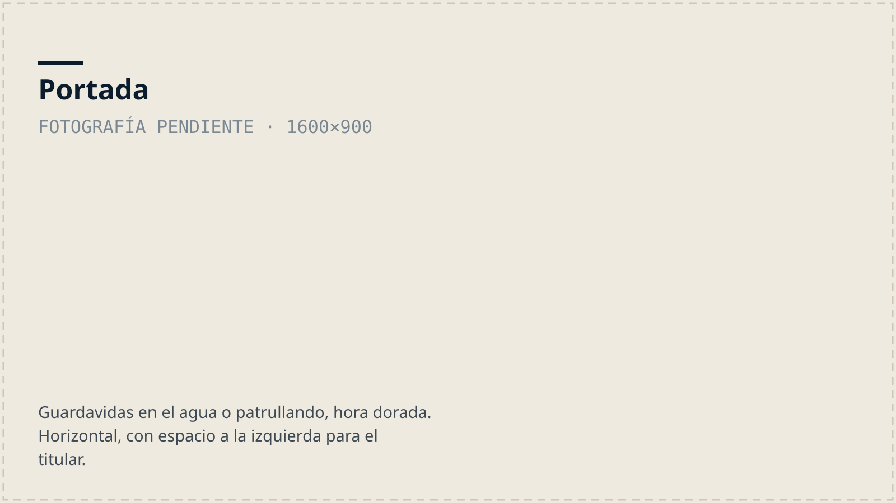

Puerto Viejo a Manzanillo · Limón
Salvando vidas en el Caribe Sur
Desde 2021 nunca murió nadie durante nuestras guardias. Somos una asociación comunitaria de salvamento acuático: patrullamos playas, formamos guardavidas y enseñamos a la comunidad a estar segura en el agua.

Nuestra misión
Misión: Revolucionar la seguridad acuática en el Caribe Sur y cambiar el paradigma de los incidentes por ahogamiento.
Visión: La soberanía y gestión de la seguridad acuática debe estar en manos de la comunidad, siendo la única opción para que sea sostenible. Si creamos una comunidad fuerte en el agua, vamos a reducir los incidentes acuáticos.
Nuestro objetivo principal es desarrollar y crear una comunidad que se sienta segura y sea fuerte en el agua. Enseñando y entrenando técnicas de salvamento, natación y apnea; con nuestros tres clubes buscamos reducir los ahogamientos y crear “embajadores locales” que puedan prevenir emergencias.
La columna vertebral de nuestra organización es la educación continua, ofreciendo cursos y formando: Guardavidas, instructores de RCP y primeros auxilios, instructores de natación y de freediving, que a su vez enseñan a la comunidad. Estos esfuerzos aseguran que los miembros de la comunidad sean más seguros en el agua. También buscamos desarrollar programas como la iniciativa Bandera Roja y Amarilla para playas organizadas y la guardia móvil. Nuestro objetivo final es establecer un Centro Acuático de Alto Rendimiento en el Caribe Sue que unifique todas las actividades relacionadas con el agua, comenzando por enseñar a la comunidad a flotar y nadar, y asegurarnos que el CADAR financie a la organización para ser autosuficientes.
Tres clubes, abiertos a la comunidad

Lifesaving Club
Guardias, entrenamiento de salvamento, educación continua y una red de alerta de emergencias con más de 70 miembros.
Conocer el club →
Swim Club
Natación en aguas abiertas y piscina, gratuita. Tres entrenamientos por semana en Punta Uva y Playa Negra, más la Swim School para la infancia.
Ver horarios →
Freediving Club
La unidad más nueva. Apnea con enseñanza segura, en una comunidad marina con amplia experiencia en buceo a pulmón.
Conocer el club →Sostener esto cuesta
Somos una organización voluntaria y autogestionada. Las clases de natación, la formación de guardavidas y el equipo de rescate se financian con donaciones y con el aporte de los negocios de la zona.